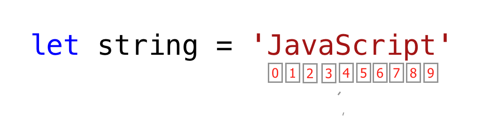

Nội dung
I. Đôi chút về Javascript
1. Phần đuổi mở rộng của file Javascript là .js
2. Đoạn mã Javascript đặt ở đâu?
- Các đoạn mã đặt trong thẻ
scripttrong phầnbody
<!DOCTYPE html>
<html lang="en">
<head>
<meta charset="UTF-8" />
<meta name="viewport" content="width=device-width, initial-scale=1.0" />
<title>Document</title>
</head>
<body>
<h1>Hello, World!</h1>
<script>
console.log("Hello world~");
</script>
</body>
</html>
- Nếu là 1 file chứa các đoạn mã Javascript
<!DOCTYPE html>
<html lang="en">
<head>
<meta charset="UTF-8" />
<meta name="viewport" content="width=device-width, initial-scale=1.0" />
<title>Document</title>
</head>
<body>
<h1>Hello, World!</h1>
<!-- Liên kết file JavaScript -->
<script src="js/app.js"></script>
</body>
</html>
❓ Tại sao nên link Javascript trong thẻ head hoặc body của HTML?
Việc link JavaScript trong phần head hoặc body của HTML có ảnh hưởng đến hiệu suất tải trang. Khi trình duyệt gặp một thẻ script, nó sẽ dừng quá trình tải trang và thực thi mã JavaScript
- Nếu chúng ta đặt thẻ script trong phần head, trình duyệt sẽ phải tải và thực thi mã JavaScript trước khi hiển thị nội dung trang web.
- Trong khi đó, đặt thẻ script ở cuối phần body giúp trình duyệt tải trang nhanh hơn đảm bảo trình duyệt tải và hiển thị nội dung trang web trước khi thực thi mã JavaScript.
3. Comment trong Javascript
- Chú thích một dòng: sử dụng dấu gạch chéo
//
// Đây là một comment một dòng
let x = 5; // Biến x được gán giá trị 5
- Chú thích nhiều dòng: sử dụng dấu
/* */
/* Đây là một comment nhiều dòng
Chú thích này có thể bao gồm nhiều dòng
giúp giải thích mã rõ ràng hơn */
let y = 10;
II. Các kiểu dữ liệu trong JavaScript
1. Kiểu dữ liệu nguyên thủy (Primitive Types):
Number: Lưu trữ số nguyên, số thập phân.String: Lưu trữ chuỗi ký tự, đặt trong' '," ", hoặcBoolean: Chỉ có 2 giá trị: true (đúng) hoặc false (sai).Undefined: Khi biến được khai báo nhưng chưa gán giá trị.
Ví dụ: 10, 3.14, -100.
Ví dụ: "Hello", 'World', Hi ${name}.
Ví dụ: true, false.
Ví dụ:
let x;
console.log(x); // undefined
Null: Dùng để gán giá trị "trống" hoặc không có gì.
Ví dụ:
let y = null;
2. Kiểu dữ liệu không nguyên thủy - tham chiếu (Reference Types):
Object: Dùng để lưu trữ dữ liệu phức tạp dưới dạng key-value.
Ví dụ:
let person = { name: "John", age: 25 };
Array: Một danh sách các giá trị.
Ví dụ:
let colors = ["red", "green", "blue"];
Function: Dùng để định nghĩa các hành động.
Ví dụ:
function greet() {
console.log("Hello!");
}
3. So sánh kiểu dữ liệu nguyên thủy và kiểu dữ liệu không nguyên thủy
3.1. Kiểu dữ liệu nguyên thủy
- Kiểu dữ liệu nguyên thủy là kiểu dữ liệu bất biến tức là khi một kiểu dữ liệu nguyên thủy được tạo ra, ta không thể sửa đổi chúng
let word = "Hello world";
word[0] = "Y";
Nếu chúng ta cố gắng sửa đổi chuỗi được lưu trữ trong word, Javascript sẽ phát sinh lỗi vì biểu thức này không thể thay đổi chuỗi được lưu trữ trong biến word
❓ Vậy nếu có 1 biến
num = 10và tôi vẫn có thể gán lại lànum = 20thì đâu còn gọi là bất biến?Khi ta thay thay đổi giá trị của biến
num, ta không thay đổi giá trị nguyên thủy ban đầu mà là đang tạo ra một giá trị mới và làm cho biếnnumtrỏ tới giá trị này
- Các kiểu dữ liệu nguyên thủy so sánh với nhau trực tiếp bằng giá trị của nó
let numOne = 3;
let numTwo = 3;
console.log(numOne == numTwo); // true
let js = "JavaScript";
let py = "Python";
console.log(js == py); //false
let lightOn = true;
let lightOff = false;
console.log(lightOn == lightOff); // false
3.2. Kiểu dữ liệu không nguyên thủy - tham chiếu
- Các kiểu dữ liệu không nguyên thủy có thể sửa đổi hoặc thay đổi được, tức ta có thể sửa đổi giá trị của các kiểu dữ liệu nguyên thủy khi chúng được tạo
let nums = [1, 2, 3];
nums[0] = 10;
console.log(nums); // [10, 2, 3]
- Kiểu dữ liệu nguyên thủy không so sánh bằng giá trị. Ngay cả khi chúng cùng thuộc tính hay giá trị thì cũng không bằng nhau và chúng chỉ bằng nhau khi cùng tham chiếu đến cùng một đối tượng
Không bằng nhau:
let nums = [1, 2, 3];
let numbers = [1, 2, 3];
console.log(nums == numbers); // false
let userOne = {
name: "Asabeneh",
role: "teaching",
country: "Finland",
};
let userTwo = {
name: "Asabeneh",
role: "teaching",
country: "Finland",
};
console.log(userOne == userTwo); // false
Có bằng nhau:
let nums = [1, 2, 3];
let numbers = nums;
console.log(nums == numbers); // true
let userOne = {
name: "Asabeneh",
role: "teaching",
country: "Finland",
};
let userTwo = userOne;
console.log(userOne == userTwo); // true
3.3. Tổng kết
| Kiểu dữ liệu | nguyên thủy | không nguyên thủy - tham chiếu |
|---|---|---|
| Khả năng thay đổi | Bất biến, không thể thay đổi | Có thể thay đổi |
| So sánh | So sánh giá trị | Không so sánh bằng giá trị (So sánh bằng tham chiếu) |
3. Kiểm tra kiểu dữ liệu
Dùng typeof để kiểm tra kiểu dữ liệu của biến.
let name = "Alice";
console.log(typeof name); // string
let age = 20;
console.log(typeof age); // number
let isHappy = true;
console.log(typeof isHappy); // boolean
III. Biến và từ khóa khai báo: let, const, var
1. Bảng so sánh var, let, const
Dưới đây là bảng so sánh giữa var, let, và const mà không đề cập đến phạm vi (scope) và hoisting:
| Thuộc tính | var | let | const |
|---|---|---|---|
| Khả năng thay đổi | Có thể thay đổi | Có thể thay đổi | Không thể thay đổi |
| Khai báo lại biến | Cho phép khai báo lại trong cùng phạm vi | Không cho phép khai báo lại | Không cho phép khai báo lại |
Ví dụ minh họa:
// var có phạm vi function
if (true) {
var x = 5;
}
console.log(x); // 5
// let có phạm vi block
if (true) {
let y = 10;
}
console.log(y); // Lỗi: y is not defined
// const không cho phép thay đổi giá trị
const z = 20;
z = 30; // Lỗi: Assignment to constant variable
- Dùng const theo mặc định, nếu cần gán lại giá trị cho biến thì dùng let, và cố gắng tránh dùng var.
IV. Hoisting và Scope
1. Ví dụ về Hoisting
Hoisting là cơ chế đưa khai báo biến/hàm lên đầu phạm vi trước khi thực thi. (chỉ có phần khai báo được đưa lên, còn giá trị được khởi tạo thì không)
- Với
var, biến được khởi tạo với giá trịundefined. - Với
let/const, biến không thể được truy cập trước khi khai báo.
Ví dụ:
// Hoisting với var
console.log(a); // undefined
var a = 5;
/*
điều này tương đương với
var a;
console.log(a);
a=5;
*/
// Hoisting với let và const
console.log(b); // Lỗi: Cannot access 'b' before initialization
let b = 10;
2. Ví dụ về Scope (Phạm vi)
Phạm vi biến quyết định nơi biến có thể được truy cập.
- Global Scope:
Biến được khai báo ngoài tất cả các khối/hàm.
let globalVar = "I am global!";
console.log(globalVar); // Có thể truy cập ở mọi nơi
- Function Scope:
Biến chỉ tồn tại trong hàm.
function testScope() {
var localVar = "I am local!";
console.log(localVar); // Truy cập được
}
console.log(localVar); // Lỗi: localVar is not defined
- Block Scope:
Biến khai báo trong khối { } chỉ tồn tại trong khối đó.
if (true) {
let blockVar = "I am block-scoped!";
console.log(blockVar); // Truy cập được
}
console.log(blockVar); // Lỗi: blockVar is not defined
Dưới đây là bảng so sánh chi tiết về Hoisting và Scope giữa var, let, và const:
| Từ khóa | Scope | Hoisting | Truy cập trước khi khai báo |
|---|---|---|---|
var | Function Scope | Được hoisting, giá trị là undefined | Có thể truy cập trước khi khai báo nhưng sẽ trả về undefined |
let | Block Scope | Được hoisting nhưng không thể truy cập trước khi khai báo (Temporal Dead Zone) | Gặp lỗi nếu truy cập trước khi khai báo |
const | Block Scope | Được hoisting nhưng không thể truy cập trước khi khai báo (Temporal Dead Zone) | Gặp lỗi nếu truy cập trước khi khai báo |
V. String và Template Literals
1. Chuỗi
Là một tập hợp các ký tự được đặc trong dấu nháy đơn hoặc nháy kép, hoặc backtick
let str1 = "Hello";
let str2 = "World";
2. Nối chuối
Nối hai hoặc nhiều chuỗi với nhau được gọi là nối chuỗi.
let str1 = "Hello";
let str2 = "World";
let space = " ";
let fullStr = str1 + space + str2; // nối hai chuối với nhau
console.log(fullStr); // Hello World
3. Chuỗi thoát
Trong JavaScript và các ngôn ngữ lập trình khác \ theo sau một số ký tự là một chuỗi thoát. Hãy xem các ký tự thoát phổ biến nhất:
\n: new line\t: Tab, means 8 spaces\\: Back slash\': Single quote (')\": Double quote (")
console.log("Hello.\nWorld"); // line break
console.log("HIT \tWEB \tPRIVATE");
console.log("This is a backslash symbol (\\)"); // Để viết một dấu gạch chéo ngược
console.log('In every programming language it starts with "Hello, World!"');
console.log("In every programming language it starts with 'Hello, World!'");
4. Độ dài của chuỗi
Phương thức length trả về độ dài của chuỗi bao gồm không gian trống.
let js = "JavaScript";
console.log(js.length); // 10
let firstName = "Asabeneh";
console.log(firstName.length); // 8
5. Cách lấy ra một ký tự trong chuỗi (String)
Bạn có thể sử dụng cú pháp chỉ số (index) hoặc phương thức --charAt() để lấy ra một ký tự trong chuỗi.
Trong lập trình, việc đếm bắt đầu từ 0. Chỉ số đầu tiên của chuỗi bằng 0 và chỉ số cuối cùng là độ dài của chuỗi trừ đi một.

let string = "JavaScript";
let firstLetter = string[0];
console.log(firstLetter); // J
let secondLetter = string[1]; // a
let thirdLetter = string[2];
let lastLetter = string[9];
console.log(lastLetter); // t
let lastIndex = string.length - 1;
console.log(lastIndex); // 9
console.log(string[lastIndex]); // t
let message = "Hello, world!";
console.log(message[0]); // "H" (ký tự đầu tiên)
console.log(message.charAt(7)); // "w" (ký tự tại vị trí 7)
6. Thay đổi chữ hoa, chữ thường
toUpperCase(): thay đổi chuỗi thành chữ hoa.
let string = "JavaScript";
console.log(string.toUpperCase()); // JAVASCRIPT
let firstName = "Asabeneh";
console.log(firstName.toUpperCase()); // ASABENEH
let country = "Finland";
console.log(country.toUpperCase()); // FINLAND
toLowerCase(): thay đổi chuỗi thành chữ thường
let string = "JavasCript";
console.log(string.toLowerCase()); // javascript
let firstName = "Asabeneh";
console.log(firstName.toLowerCase()); // asabeneh
let country = "Finland";
console.log(country.toLowerCase()); // finland
7. Template Literals
Template Literals (chuỗi mẫu) được giới thiệu từ ES6, giúp chèn biến hoặc biểu thức vào chuỗi bằng cú pháp ${}.
Cú pháp:
//Syntax
const str1 = `String literal text`;
const str2 = `String literal text ${expression}`;
let name = "John";
let age = 25;
let message = `My name is ${name} and I am ${age} years old.`;
console.log(message); // "My name is John and I am 25 years old."
console.log(`The sum of 2 and 3 is 5`); // statically writing the data
let a = 2;
let b = 3;
console.log(`The sum of ${a} and ${b} is ${a + b}`); // injecting the data dynamically
let a = 2;
let b = 3;
console.log(`${a} is greater than ${b}: ${a > b}`);
// 2 is greater than 3: false
8. Đổi kiểu dữ liệu
- Chúng ta có thể đổi từ chuỗi sang số bằng các cách sau:
parseInt(string)Number(string)Plus sign (+)
let num = "10";
let numInt = parseInt(num);
console.log(numInt); // 10
let num = "10";
let numInt = Number(num);
console.log(numInt); // 10
let num = "10";
let numInt = +num;
console.log(numInt); // 10
- Chúng ta có thể đổi từ kiểu số thập phân sang số nguyên bằng
parseInt()
let num = 9.81;
let numInt = parseInt(num);
console.log(numInt); // 9
VI. Toán tử (Operators)
1. Các loại toán tử
- Arithmetic Operators (Toán tử số học):
+,-,*,/,%,**(lũy thừa). - Assignment Operators (Toán tử gán):
=,+=,-=,*=,/=, ... - Comparison Operators (Toán tử so sánh):
==,===,!=,!==,<,>,<=,>=. - Logical Operators (Toán tử logic):
&&,||,!. - Ternary Operator (Toán tử 3 ngôi):
condition ? expr1 : expr2.
- Đối với Logical Operators (Toán tử logic), mn nên tìm hiểu thêm các giá trị truthy và falsy kết hợp && và ||.
2. So sánh == và ===
| Thuộc tính | == (So sánh lỏng) | === (So sánh nghiêm ngặt) |
|---|---|---|
| So sánh giá trị | Có, tự động chuyển đổi kiểu | Có, nhưng không chuyển đổi kiểu |
| So sánh kiểu dữ liệu | Không | Có |
Ví dụ minh họa:
// So sánh lỏng (==)
console.log(5 == "5"); // true (chuyển "5" thành số 5)
console.log(false == 0); // true
// So sánh nghiêm ngặt (===)
console.log(5 === "5"); // false (khác kiểu dữ liệu)
console.log(false === 0); // false (khác kiểu dữ liệu)
Lời khuyên: Luôn sử dụng === để tránh lỗi không mong muốn do chuyển đổi kiểu dữ liệu tự động.
VII. Cấu trúc điều kiện: if-else, switch case
1. if / else-if / else
Cú pháp:
if (condition) {
// Code nếu điều kiện đúng
} else if (anotherCondition) {
// Code nếu điều kiện khác đúng
} else {
// Code nếu không điều kiện nào đúng
}
Ví dụ:
let age = 20;
if (age < 15) {
console.log("Bạn chưa đủ tuổi.");
} else if (age >= 15 && age <= 18) {
console.log("Bạn vừa đủ tuổi.");
} else {
console.log("Bạn đủ tuổi.");
}
2. switch case
Cú pháp:
switch (expression) {
case value1:
// Code
break;
case value2:
// Code
break;
default:
// Code
}
Ví dụ:
let fruit = "apple";
switch (fruit) {
case "banana":
console.log("Đây là chuối.");
break;
case "apple":
console.log("Đây là táo.");
break;
default:
console.log("Trái cây không xác định.");
}
VIII. Vòng lặp: for, while
1. for
for (let i = 0; i < 5; i++) {
console.log(i);
}
2. while
let i = 0;
while (i < 5) {
console.log(i);
i++;
}
3. do-while
let i = 0;
do {
console.log(i);
i++;
} while (i < 5);
4. for of loop
Nếu bạn không quá quan trọng hay để ý tới giá trị index khi sử dụng đến vòng lặp, bạn có thể sử dụng for of loop
for (const element of arr) {
// code goes here
}
const numbers = [1, 2, 3, 4, 5];
for (const num of numbers) {
console.log(num);
}
// 1 2 3 4 5
for (const num of numbers) {
console.log(num * num);
}
// 1 4 9 16 25
// adding all the numbers in the array
let sum = 0;
for (const num of numbers) {
sum = sum + num;
// can be also shorten like this, sum += num
// after this we will use the shorter synthax(+=, -=, *=, /= etc)
}
console.log(sum); // 15
const webTechs = [
"HTML",
"CSS",
"JavaScript",
"React",
"Redux",
"Node",
"MongoDB",
];
for (const tech of webTechs) {
console.log(tech.toUpperCase());
}
// HTML CSS JAVASCRIPT REACT NODE MONGODB
for (const tech of webTechs) {
console.log(tech[0]); // get only the first letter of each element, H C J R N M
}
const countries = ["Finland", "Sweden", "Norway", "Denmark", "Iceland"];
const newArr = [];
for (const country of countries) {
newArr.push(country.toUpperCase());
}
console.log(newArr); // ["FINLAND", "SWEDEN", "NORWAY", "DENMARK", "ICELAND"]
5. break
break được sử dụng để dừng vòng lặp
for (let i = 0; i <= 5; i++) {
if (i == 3) {
break;
}
console.log(i);
}
// 0 1 2
6. continue
for (let i = 0; i <= 5; i++) {
if (i == 3) {
break;
}
console.log(i);
}
// 0 1 2
IX. Giới thiệu thêm về prompt và alert
prompt()
- là một hàm trong Javascript dùng để lấy thông tin đầu vào từ người dùng thông qua hộp thoại (dialog box).
- Nó hiển thị một hộp thoại có trường nhập liệu và một nút "OK" để xác nhận. Người dùng có thể nhập thông tin vào trường đó, sau đó thông tin sẽ được lưu trong một biến
prompt(message, defaultValue);
message: Thông báo hiển thị trong hộp thoại để hướng dẫn người dùng.defaultValue(tùy chọn): Giá trị mặc định hiển thị trong ô nhập liệu.
let name = prompt("Nhập tên của bạn:");
alert("Xin chào, " + name + "!");
alert()
alert()là một hàm trong JavaScript dùng để hiển thị thông báo (message box) cho người dùng thông qua một hộp thoại đơn giản.- Nó chỉ hiển thị thông tin và có nút OK để người dùng đóng thông báo.
alert(message);
message: Thông tin cần hiển thị trong hộp thông báo.
alert("Chào mừng bạn đến với JavaScript!");